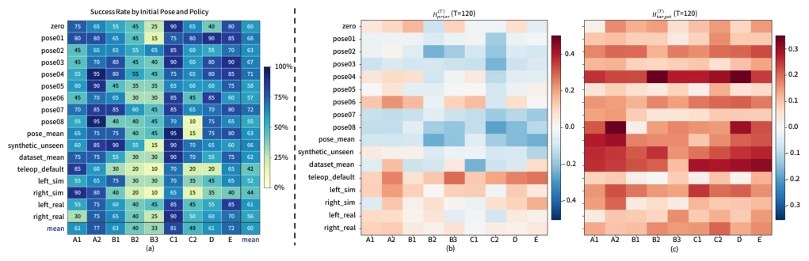
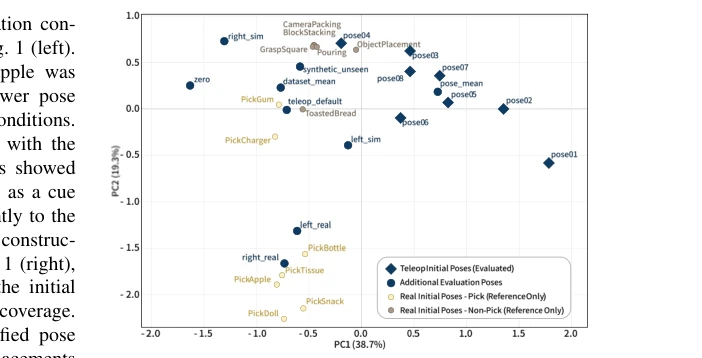
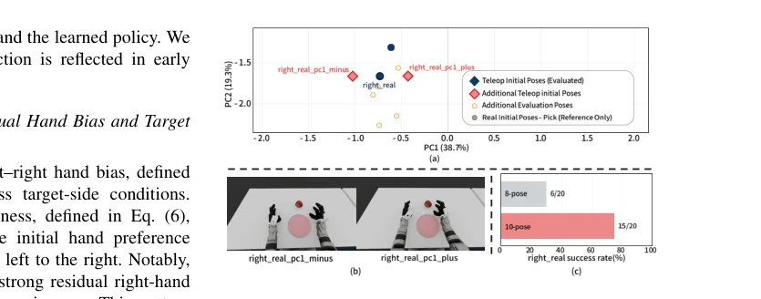
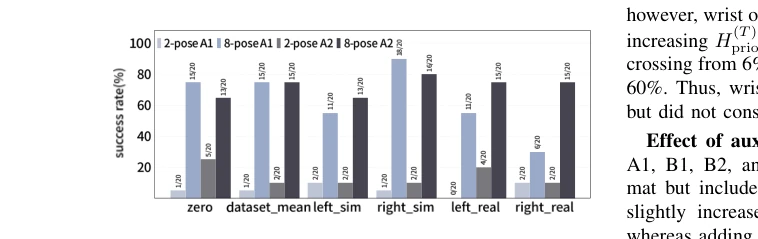
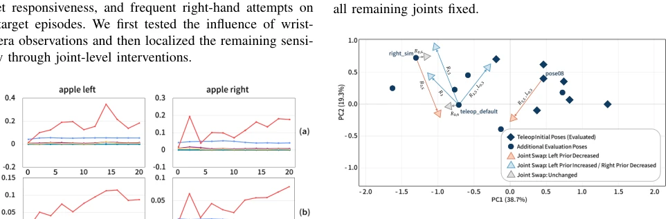
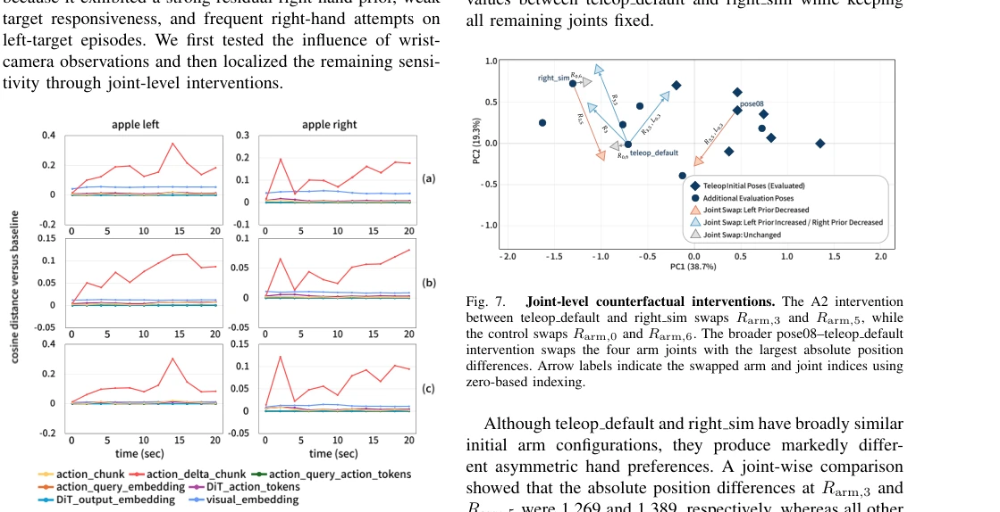

VLA models are often touted as general-purpose, but this paper reveals their "posture dependency" in dual-arm manipulation. The authors sharply point out that aggregated success rates can mask hand selection bias under specific initial configurations, defining it as Policy-Induced Hand Prior. The highlight lies in proposing the HandPriorScore quantification metric, and precisely identifying Rarm,3 and Rarm,5 as causal handles through joint-level intervention. However, experiments are limited to a single PickApple task and Unitree G1 robot, and with a small intervention sample size, the generalization ability of conclusions on other VLA architectures or tasks is questionable. This is more like a precise strike on blind spots of existing benchmarks, rather than a general solution. Such findings are crucial for building more robust embodied intelligence systems, but also expose the vulnerability of current VLA models in state encoding.
Existing VLA strategies expect to remain robust under initial configuration changes, but evaluation protocols often fix initial states [5] or focus only on average performance [10], leading to failures under specific postures being hidden. Studies show strategies may overly rely on proprioceptive signals while ignoring visual evidence [11], even using initial states as shortcuts for hand selection. Related benchmarks like LIBERO-Plus evaluate perturbations but do not deeply analyze hand selection shortcuts [10]. This paper aims to address how initial configurations induce erroneous hand preferences in humanoid dual-arm manipulation, and this preference is difficult to discover through conventional task success rates. By diagnosing this dependency, the authors hope to reveal the true impact of data coverage and training composition on robustness.
The overall workflow covers training, evaluation, diagnosis, and enhancement. First, HandPriorScore is defined to quantify left-right hand action imbalance within the initial decision window, separating residual hand bias and target responsiveness. By calculating relative action change amounts, absolute joint targets and shared offsets are separated, ensuring the metric is unaffected by overall motion amplitude. Second, wrist camera masks are adopted to analyze the impact of the visual modality. The core innovation lies in joint-level counterfactual intervention: by swapping specific joint values under different initial configurations (such as Rarm,3 and Rarm,5), testing whether physical state changes switch hand selection behavior. Finally, by expanding training pose coverage and performing local data augmentation for low-performance configurations, the role of data distribution on robustness is verified.
Using Unitree G1 robot and PickApple task, the training set includes simulation and real teleoperation data. Evaluate 17 initial poses, comparing strategies of different training configurations (A1-E). Metrics include task success rate, HandPriorScore, and Target Responsiveness. Results show that expanding training poses from 2 to 8 significantly improves average success rate. Local augmentation for failed poses (right real) increases success rate from 30% to 75%. Joint intervention confirms specific joint values directly control hand preference, while wrist camera plays only a modulating role. Ablation studies show that increasing simulation ratio and wrist observation are usually beneficial, but task exposure needs to be balanced.
其他图片Other Figures

Fig. 2. Task success of initial-pose and policy dependence (left) and early hand preference during the initial decision window (right). (a) PickApple success rate for each initial-pose—policy pair. (b) Residual directional bias H(T ) prior after averaging across the left and right target conditions.

Fig. 3. PCA projection of evaluation initial poses and task-level distributions. Blue diamonds denote 8 diversified PickApple training poses, while blue circles denote the remaining evaluation initial configurations. Yellow and gray circles respectively represent the task-level initial-state means of the pick-type and non-pick real-robot datasets.

Fig. 5. Targeted pose augmentation around the right real configu- ration. (a) Enlarged PCA projection of the local initial-state region. The two red diamonds denote additional collection poses placed on either side of right real along PC1. (b) Robot configurations images corresponding to right real pc1 minus and right real pc1 plus. (c) Success rate at right real for A1 trained with the original eight-pose dataset and the augmented ten- pose dataset.

Fig. 4. Effect of initial-pose diversification on PickApple success. A1 and A2 were trained using either the pre-diversification dataset collected from two target-coupled initial poses or the diversified dataset collected from eight initial poses.

Fig. 7. Joint-level counterfactual interventions. The A2 intervention between teleop default and right sim swaps Rarm,3 and Rarm,5, while the control swaps Rarm,0 and Rarm,6. The broader pose08–teleop default intervention swaps the four arm joints with the largest absolute position differences. Arrow labels indicate the swapped arm and joint indices using zero-based indexing.

Fig. 6. Wrist-mask perturbation for A2 at teleop default. (a) Both-wrist camera masking, (b) left-wrist camera masking, and (c) right-wrist camera masking. Columns correspond to left- and right-side apple placements. Each curve reports the cosine distance from the paired full-observation baseline for the visual, intermediate-token, and predicted-action representations over 0–20 s.